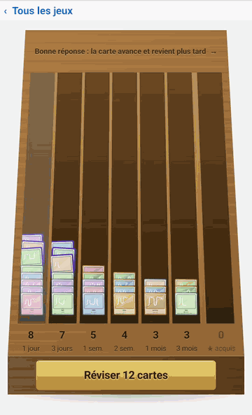
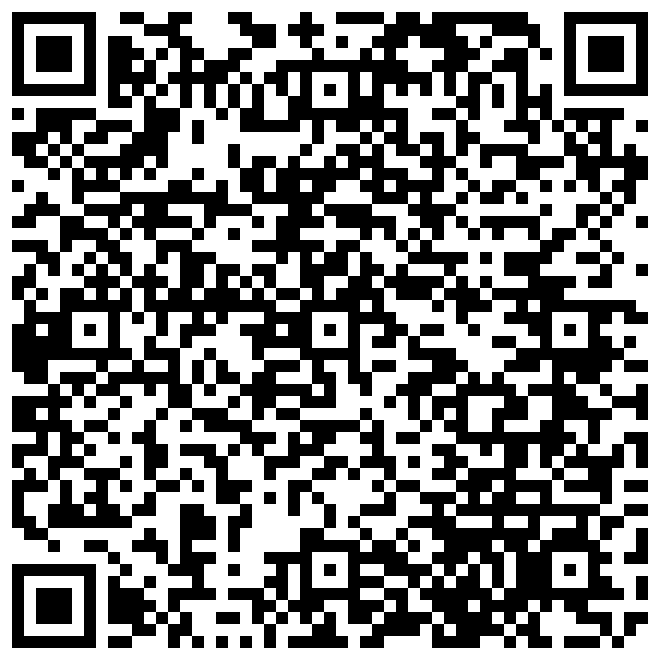

Écrire comme on parle
Vous savez le dire, mais l'écrire, c'est autre chose : é ou è, ò ou o, où va l'accent ? Le clavier vous répond pendant que vous tapez. Regardez-le écrire, puis prenez la main : touchez une lettre du clavier d'essai.
-
Trois lettres suffisent
Tapez « kré » : « kréyòl » est déjà proposé. Les mots viennent des textes de Sylviane Telchid, Sonny Rupaire, Max Rippon et bien d'autres : vous n'inventez rien, vous choisissez.
-
Il devine la suite
Après « nou kay », il propose déjà « bengné ». Il tient compte de ce que vous venez d'écrire : un appui, et le mot suivant est posé.
-
Il remet les accents
Tapez sans vous soucier des accents : à l'espace, « kreyol » devient « kréyòl ». Vos lettres restent les vôtres, seuls les accents s'ajoutent, et un retour arrière les retire si vous n'en vouliez pas.
-
Il rattrape les fautes de frappe
Une touche voisine, deux lettres inversées : le bon mot arrive quand même. Et quand aucun mot kréyòl ne correspond, le français prend le relais, sans changer de clavier.
Le clavier d'essai tourne dans votre navigateur : rien de ce que vous y tapez n'est envoyé.
Ils l'écrivent déjà
3 000téléchargements et plus
4,4 / 5sur Google Play, pour 55 avis
★★★★★
« Je passe ma note de 4 à 5 étoiles car depuis la maj, il y a les traductions des mots dans les jeux juste parfait ! »
★★★★★
« Très instructif et permet d'accéder à de nombreux mots. Bravo ! »
★★★★★
« Très fière, satisfaite… ❤️ ❤️ »
Avis publiés sur la fiche Google Play, cités sans leurs auteurs.
Guadeloupe la 1ère lui a consacré un sujet au journal de 19h30, Canal 10 l'a présenté dans sa chronique Tech, et France-Antilles en a fait un entretien : « Si le créole guadeloupéen n'existe pas, petit à petit, on s'efface ». Lire la presse

En prime
Chaque mot trouvé devient une carte
Six petits jeux vous font rencontrer des mots nouveaux. Chaque mot gagné rejoint votre carnet, Sanblé, sur une carte qui porte son sens en français et une phrase d'un auteur guadeloupéen. La révision Sonjé vous le ramène jusqu'à ce que vous le reteniez.
Le clavier fait office d'examen. Si vous réécrivez un mot de votre carnet dans vos messages, sa carte avance toute seule. Et votre niveau monte, de Pipirit à Potomitan, au fil des mots que vous tapez vraiment.
Vos questions
« Mon téléphone corrige mon kréyòl en français. »
Celui-ci ne remplace jamais un mot par un autre. Choisissez-le aussi comme correcteur dans les réglages d'Android : vos mots kréyòl ne sont plus pris pour des fautes.
« Je mélange avec le français. »
Lui aussi : les mots français sont proposés sur une seconde ligne, sous les mots kréyòl. Un seul clavier pour les deux.
« Android m'affiche un avertissement. »
Il s'affiche pour tous les claviers, sans exception, au moment de les activer. Celui-ci n'envoie rien de ce que vous tapez : tout reste sur votre téléphone.
« J'ai un iPhone. »
Le clavier existe pour l'instant sur Android. Sur iPhone ou sur ordinateur, essayez-le plus haut sur cette page : touchez une lettre du clavier d'essai.
Faire connaître
Vin Anbasadè !
Chaque message écrit en kréyòl aide notre langue à exister dans le numérique, là où elle se joue chaque jour. Pour aller plus loin, la page ambassadeurs vous donne tout : les contacts des médias locaux, des e-mails prêts à envoyer, et un tract à laisser chez le boulanger, le pharmacien ou la boutique du coin.


Installer en trois étapes
- Installez l'application depuis Google Play.
- Suivez l'accueil de l'application : il vous montre comment activer le clavier, écran par écran. Le guide en ligne fait de même.
- Écrivez votre premier message en kréyòl.
Ce que vous tapez ne quitte pas votre téléphone. Pas de compte, pas de serveur, aucune sauvegarde dans le nuage. La politique de confidentialité le dit en toutes lettres.

Scannez avec votre téléphone